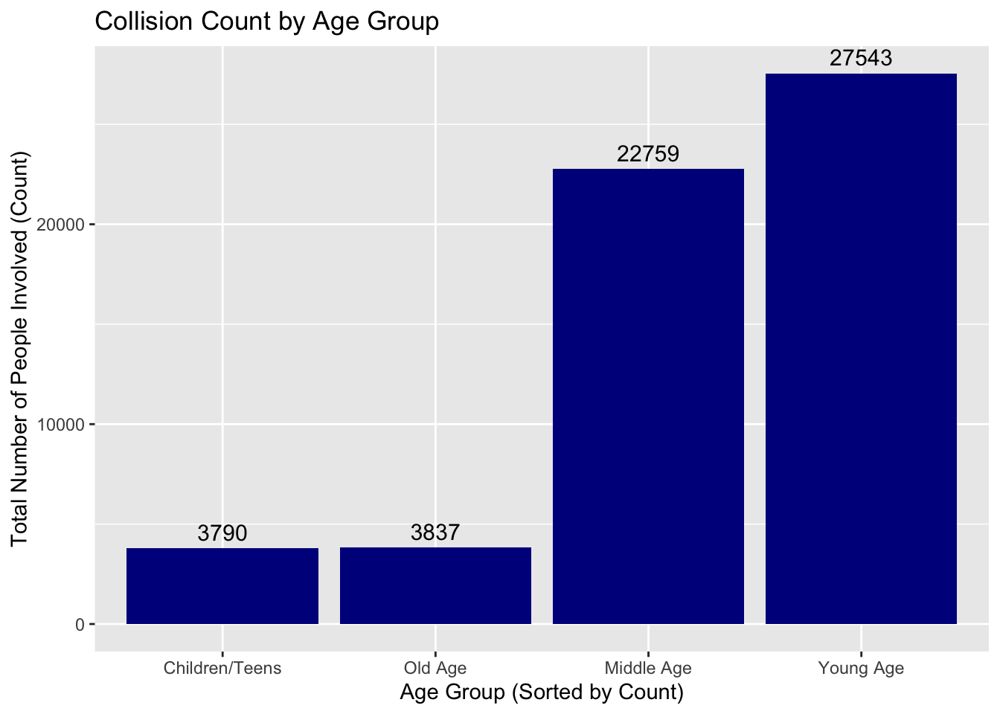
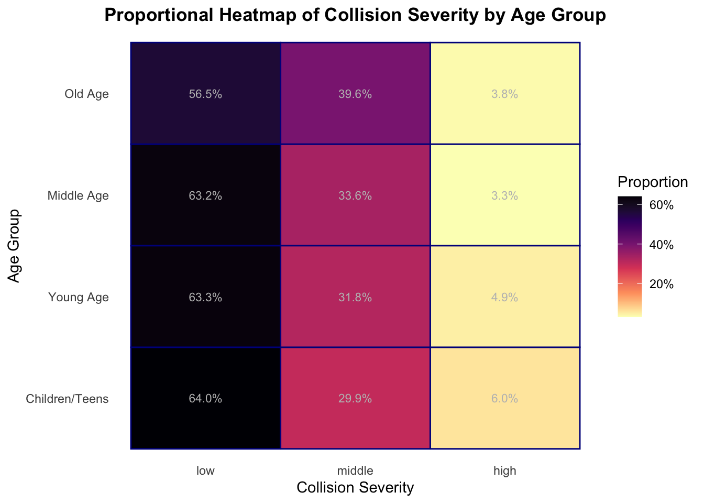
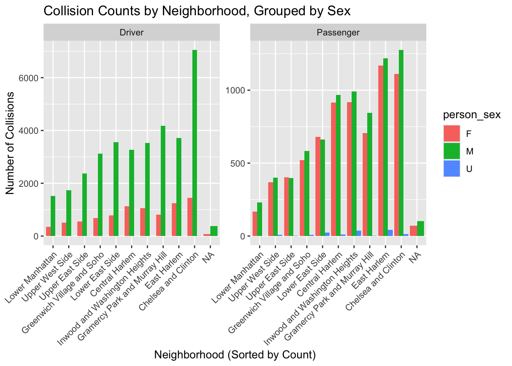

## person_type number prop
## 1 Bicyclist 31 0.0005349439
## 2 Occupant 57845 0.9981880932
## 3 Other Motorized 74 0.0012769629## person_age number prop
## 1 -971 1 1.725626e-05
## 2 -966 1 1.725626e-05
## 3 -961 1 1.725626e-05
## 4 -960 1 1.725626e-05
## 5 -959 1 1.725626e-05
## 6 -958 1 1.725626e-05
## 7 -797 1 1.725626e-05
## 8 -751 1 1.725626e-05
## 9 -599 1 1.725626e-05
## 10 -597 1 1.725626e-05
## 11 -596 3 5.176877e-05
## 12 -595 3 5.176877e-05
## 13 -593 2 3.451251e-05
## 14 -591 1 1.725626e-05
## 15 0 121 2.088007e-03
## 16 1 151 2.605695e-03
## 17 2 118 2.036238e-03
## 18 3 145 2.502157e-03
## 19 4 205 3.537532e-03
## 20 5 179 3.088870e-03
## 21 6 184 3.175151e-03
## 22 7 202 3.485764e-03
## 23 8 190 3.278689e-03
## 24 9 250 4.314064e-03
## 25 10 228 3.934426e-03
## 26 11 181 3.123382e-03
## 27 12 145 2.502157e-03
## 28 13 146 2.519413e-03
## 29 14 138 2.381363e-03
## 30 15 119 2.053494e-03
## 31 16 144 2.484901e-03
## 32 17 200 3.451251e-03
## 33 18 329 5.677308e-03
## 34 19 415 7.161346e-03
## 35 20 583 1.006040e-02
## 36 21 760 1.311475e-02
## 37 22 1025 1.768766e-02
## 38 23 1219 2.103538e-02
## 39 24 1306 2.253667e-02
## 40 25 1477 2.548749e-02
## 41 26 1489 2.569456e-02
## 42 27 1525 2.631579e-02
## 43 28 1508 2.602243e-02
## 44 29 1526 2.633305e-02
## 45 30 1701 2.935289e-02
## 46 31 1586 2.736842e-02
## 47 32 1640 2.830026e-02
## 48 33 1580 2.726488e-02
## 49 34 1527 2.635030e-02
## 50 35 1492 2.574633e-02
## 51 36 1473 2.541846e-02
## 52 37 1462 2.522865e-02
## 53 38 1303 2.248490e-02
## 54 39 1361 2.348576e-02
## 55 40 1249 2.155306e-02
## 56 41 1174 2.025884e-02
## 57 42 1142 1.970664e-02
## 58 43 1134 1.956859e-02
## 59 44 1111 1.917170e-02
## 60 45 1088 1.877481e-02
## 61 46 1056 1.822261e-02
## 62 47 1055 1.820535e-02
## 63 48 981 1.692839e-02
## 64 49 885 1.527179e-02
## 65 50 919 1.585850e-02
## 66 51 864 1.490940e-02
## 67 52 880 1.518550e-02
## 68 53 881 1.520276e-02
## 69 54 888 1.532355e-02
## 70 55 903 1.558240e-02
## 71 56 815 1.406385e-02
## 72 57 852 1.470233e-02
## 73 58 850 1.466782e-02
## 74 59 791 1.364970e-02
## 75 60 767 1.323555e-02
## 76 61 687 1.185505e-02
## 77 62 667 1.150992e-02
## 78 63 576 9.939603e-03
## 79 64 544 9.387403e-03
## 80 65 518 8.938740e-03
## 81 66 444 7.661777e-03
## 82 67 368 6.350302e-03
## 83 68 378 6.522865e-03
## 84 69 257 4.434858e-03
## 85 70 259 4.469370e-03
## 86 71 222 3.830889e-03
## 87 72 206 3.554789e-03
## 88 73 149 2.571182e-03
## 89 74 151 2.605695e-03
## 90 75 139 2.398619e-03
## 91 76 111 1.915444e-03
## 92 77 97 1.673857e-03
## 93 78 77 1.328732e-03
## 94 79 71 1.225194e-03
## 95 80 62 1.069888e-03
## 96 81 56 9.663503e-04
## 97 82 54 9.318378e-04
## 98 83 44 7.592752e-04
## 99 84 28 4.831752e-04
## 100 85 22 3.796376e-04
## 101 86 29 5.004314e-04
## 102 87 17 2.933563e-04
## 103 88 14 2.415876e-04
## 104 89 12 2.070751e-04
## 105 90 6 1.035375e-04
## 106 91 5 8.628128e-05
## 107 92 4 6.902502e-05
## 108 93 2 3.451251e-05
## 109 94 4 6.902502e-05
## 110 95 1 1.725626e-05
## 111 96 2 3.451251e-05
## 112 97 2 3.451251e-05
## 113 99 9 1.553063e-04
## 114 101 2 3.451251e-05
## 115 102 6 1.035375e-04
## 116 112 1 1.725626e-05
## 117 116 1 1.725626e-05
## 118 121 1 1.725626e-05
## 119 122 2 3.451251e-05
## 120 123 4 6.902502e-05
## 121 823 1 1.725626e-05
## 122 955 1 1.725626e-05## person_sex number prop
## 1 F 15692 0.270785160
## 2 M 42076 0.726074202
## 3 U 182 0.003140638## person_role number prop
## 1 Driver 43101 0.7437619
## 2 Passenger 14849 0.2562381## person_eje number prop
## 1 Ejected 292 0.0050388266
## 2 Not Ejected 57416 0.9907851596
## 3 Partially Ejected 217 0.0037446074
## 4 Trapped 25 0.0004314064## person_safe_equip number prop
## 1 Air Bag Deployed 251 4.331320e-03
## 2 Air Bag Deployed/Child Restraint 4 6.902502e-05
## 3 Air Bag Deployed/Lap Belt 91 1.570319e-03
## 4 Air Bag Deployed/Lap Belt/Harness 196 3.382226e-03
## 5 Child Restraint Only 452 7.799827e-03
## 6 Harness 463 7.989646e-03
## 7 Helmet (Motorcycle Only) 595 1.026747e-02
## 8 Helmet Only (In-Line Skater/Bicyclist) 47 8.110440e-04
## 9 Helmet/Other (In-Line Skater/Bicyclist) 21 3.623814e-04
## 10 Lap Belt 16205 2.796376e-01
## 11 Lap Belt & Harness 31124 5.370837e-01
## 12 None 7801 1.346160e-01
## 13 Other 692 1.194133e-02
## 14 Stoppers Only (In-Line Skater/Bicyclist) 8 1.380500e-04
I set up a filter which only keeps the age: 0 <= person_age <= 140. Then I created a new variable age_group separate to six age group: Pre age are 0 - 19, young age are 20-39, middle age are 40-64, and old age begins around 65. After the graph we can see the most of the crash are happened to the Young age, secondly are the Middle age.

| seatbelt_used | n |
|---|---|
| 0 | 6039 |
| 1 | 39197 |
## # A tibble: 2 × 5
## term estimate std.error statistic p.value
## <chr> <dbl> <dbl> <dbl> <dbl>
## 1 (Intercept) 0.00349 0.219 -25.9 1.02e-147
## 2 seatbelt_used 0.733 0.240 -1.29 1.96e- 1| neighborhood | number | prop |
|---|---|---|
| Chelsea and Clinton | 10908 | 0.19 |
| East Harlem | 7399 | 0.13 |
| Gramercy Park and Murray Hill | 6550 | 0.11 |
| Inwood and Washington Heights | 6534 | 0.11 |
| Central Harlem | 6294 | 0.11 |
| Lower East Side | 5702 | 0.10 |
| Greenwich Village and Soho | 4928 | 0.09 |
| Upper East Side | 3728 | 0.06 |
| Upper West Side | 3016 | 0.05 |
| Lower Manhattan | 2267 | 0.04 |
| NA | 624 | 0.01 |
## Warning: `fct_reorder()` removing 624 missing values.
## ℹ Use `.na_rm = TRUE` to silence this message.
## ℹ Use `.na_rm = FALSE` to preserve NAs.